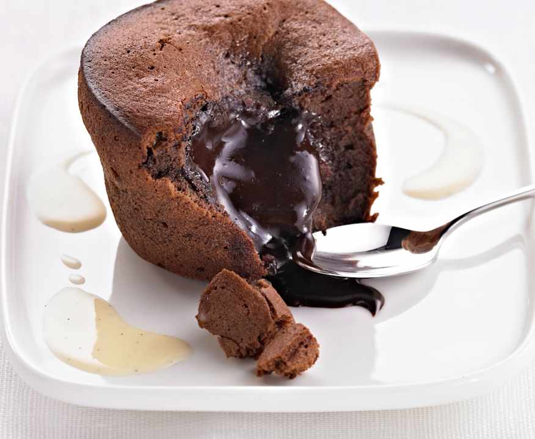

Fondant au Chocolat
Un dessert ultra fondant, coulant à l'intérieur... Un vrai régal pour les fans de chocolat !
Ingrédients :
- 200g de chocolat noir
- 150g de beurre
- 100g de sucre
- 50g de farine
- 4 œufs
Préparation :
- Fais fondre le chocolat et le beurre au bain-marie.
- Ajoute le sucre, les œufs un par un, puis la farine.
- Verse dans des moules beurrés.
- Enfourne à 180°C pendant 10 à 12 minutes.
- Serre chaud ou tiède pour garder le cœur coulant.
← Retour à l'accueil